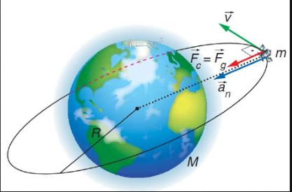

Importancia de la Física
La física es una de las ciencias más fundamentales que existen, ya que se encarga de estudiar la naturaleza
en su forma más básica: analiza la materia, la energía, el movimiento, las fuerzas, el espacio y el tiempo. A
través del método científico, la física busca descubrir las leyes que gobiernan el universo, desde los
fenómenos más cotidianos hasta los más complejos. Su importancia radica en que es la base sobre la que se
construyen muchas otras disciplinas científicas, como la química, la biología, la astronomía o la ingeniería.
Sin los principios de la física, sería imposible entender cómo funciona un motor, cómo se transmite la luz
cómo opera una computadora o incluso cómo se origina la vida.
La física no solo nos ayuda a entender el mundo que nos rodea, sino que también ha sido la fuente de los
avances tecnológicos más importantes de la historia. Gracias a los descubrimientos físicos, hoy en día
disfrutamos de electricidad, telecomunicaciones, transporte moderno, equipos médicos avanzados, satélites,
energía nuclear, computadoras, internet y muchas otras tecnologías que forman parte esencial de nuestra
vida cotidiana. Sin la física, el mundo moderno simplemente no existiría como lo conocemos. Cada avance
tecnológico ha sido, en algún momento, una aplicación práctica de un principio físico, estudiado y
demostrado con rigurosidad científica.
Además de su impacto directo en la tecnología, la física ha tenido un rol clave en la evolución del
pensamiento humano. Nos ha enseñado a cuestionar lo que vemos, a buscar explicaciones racionales, a usar
las matemáticas como herramienta de comprensión, y a plantear hipótesis que luego se prueban mediante
la observación y el experimento. Estudiar física no solo aporta conocimiento, sino que también entrena el
pensamiento crítico, la lógica, el razonamiento abstracto y la resolución de problemas, habilidades que son
útiles en cualquier ámbito de la vida profesional y personal.
La física también nos conecta con lo más profundo del universo y de nosotros mismos. Nos permite
explorar desde las partículas más pequeñas que componen la materia hasta las galaxias más lejanas del cosmos.
Gracias a la física hemos podido construir teorías que explican cómo nació el universo, cómo se forman las
estrellas, qué es el tiempo, o incluso qué puede haber más allá de lo que podemos ver. En ese sentido, la
física alimenta nuestra curiosidad más esencial: entender el origen, la estructura y el destino de todo lo que
existe.